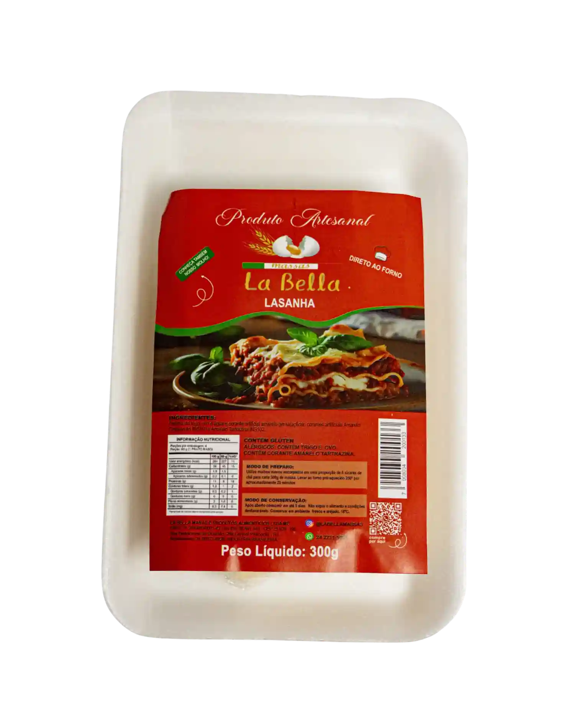
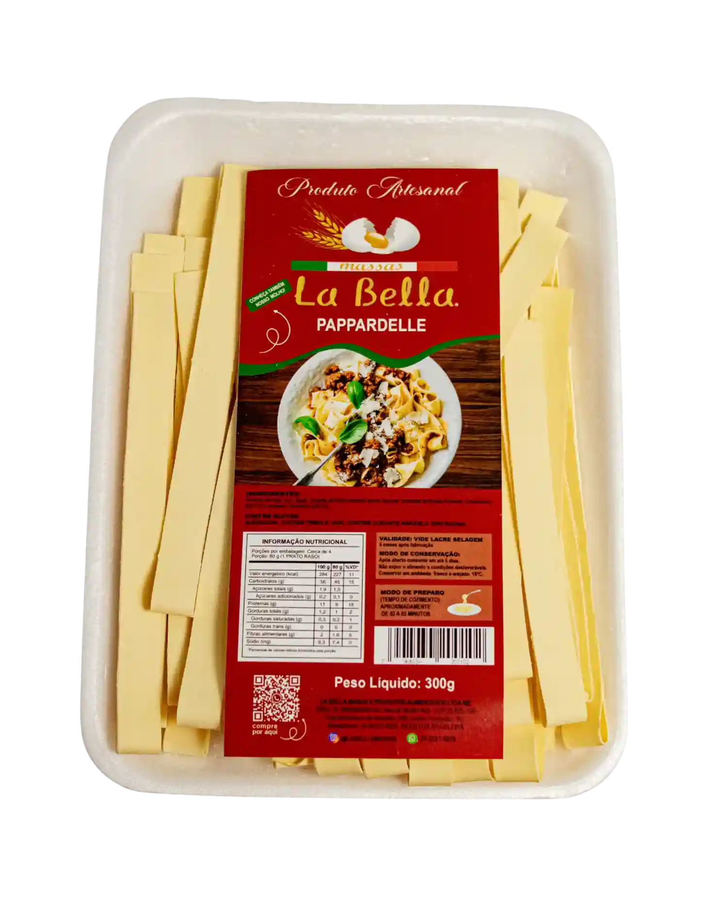
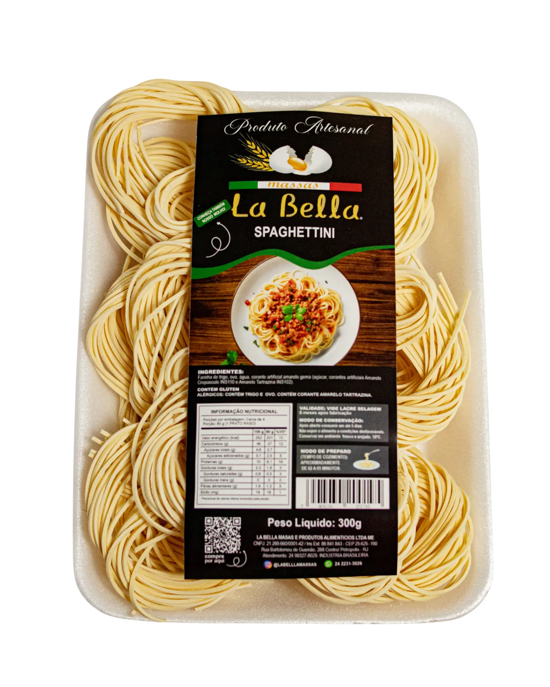

Massas Artesanais em Petrópolis

Fettuccine Paglia e Fieno
Uma massa artesanal delicada que une o tradicional grano duro ao sabor suave e cor vibrante do espinafre fresco. Ideal para molhos brancos ou na manteiga de sálvia.
Comprar
Fettuccine Misto
A harmonia perfeita entre o sabor clássico e a textura artesanal. Uma mistura equilibrada para quem aprecia a versatilidade de uma verdadeira massa italiana.
Comprar
Fettuccine com Pimenta Caiena
Para os amantes de um toque picante, esta massa traz a ardência sutil da pimenta caiena incorporada à massa, elevando o sabor de qualquer molho de tomate ou carne.
Comprar
Massa para Lasanha
Folhas de massa fresca, finas e elásticas, prontas para a montagem direto ao forno. Proporcionam uma lasanha leve, saborosa e com a textura perfeita da massa caseira.
Comprar
Pappardelle Artesanal
Fitas largas e robustas que proporcionam uma experiência rústica e sofisticada. Perfeito para acompanhar molhos encorpados como ragu de carne ou cogumelos.
Comprar
Spaghettini Artesanal
Fios longos e delicados, preparados com cuidado para manter a leveza. Uma massa versátil que brilha com molhos leves de azeite, ervas ou frutos do mar.
Comprar
Talharim Paglia e Fieno
A elegância do corte talharim combinada à tradição "palha e feno". Um visual atraente e um sabor equilibrado que transforma qualquer refeição em uma ocasião especial.
Comprar
Talharim de Manjericão
O frescor do manjericão colhido na hora, transformado em uma massa aromática e cheia de vida. Uma explosão de frescor que pede apenas um bom azeite e parmesão.
Comprar
Talharim Integral
Saúde e sabor caminham juntos nesta massa feita com grãos integrais selecionados. Rica em fibras e com um sabor amendoado delicioso, ideal para uma dieta equilibrada.
Comprar